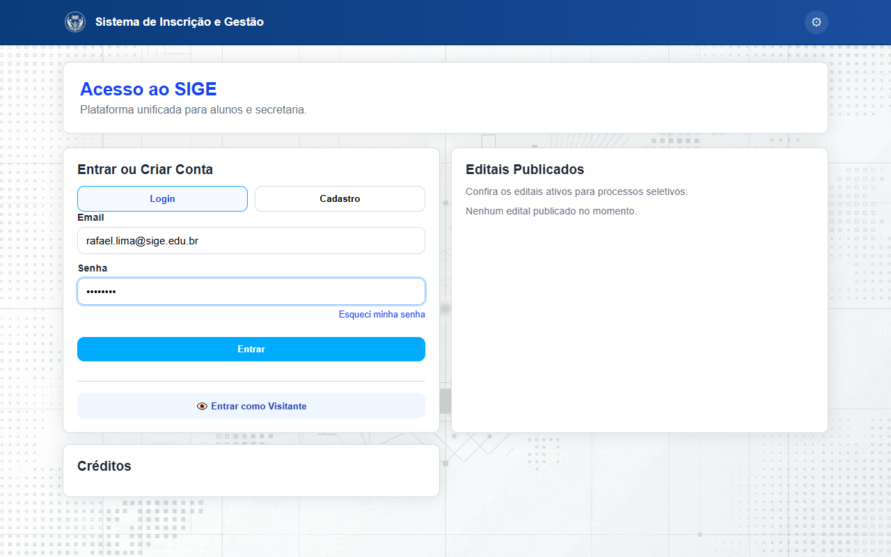

Manual do Professor
Guia de uso do sistema SIGE para professores — consulta de dados acadêmicos, acompanhamento de alunos e integração com a Secretaria.
1. Introdução
O SIGE (Sistema de Inscrição e Gestão Escolar) conta com um Portal do Professor dedicado, um sistema com tema verde exclusivo para docentes. Através dele, professores podem gerenciar turmas, lançar notas, registrar frequência e acompanhar o desempenho acadêmico dos alunos em tempo real.
O portal do professor permite acesso tanto para professores quanto para administradores da instituição. Administradores visualizam todas as turmas e disciplinas, enquanto professores veem apenas aquelas às quais foram vinculados pela Secretaria.

2. Acessando o Sistema
O acesso ao Portal do Professor é feito através do Portal de Inscrição. Após autenticação com e-mail e senha, o sistema identifica o perfil do usuário e redireciona automaticamente ao Portal do Professor.
Passos para acessar:
- Acesse o Portal de Inscrição
- Clique em Entrar
- Informe seu e-mail institucional e senha
- Após autenticação, você será redirecionado automaticamente ao Portal do Professor

3. Visão Geral
O Portal do Professor possui 6 módulos principais, acessíveis pela barra lateral esquerda:
- Dashboard — visão geral com KPIs, gráfico de desempenho dos alunos (aprovados/reprovados/recuperação/cursando) e lista de turmas
- Minhas Turmas — listagem das turmas vinculadas com opção de ver alunos e redirecionamento para notas
- Lançar Notas — registro de notas por turma e disciplina com salvamento individual
- Lançar Frequência — registro de presenças e faltas com barra de estatísticas, navegação rápida de datas e histórico por aluno
- Disciplinas — consulta com filtro por turma, status (concluída/em andamento) e botão para concluir/reabrir disciplina
- Configurações — modo escuro e ajuste de tamanho da fonte
4. Funcionalidades Disponíveis
4.1 Dashboard
A tela inicial exibe um painel completo com 4 KPIs: Aulas Dadas (mês atual), Total de Alunos (matriculados nas suas turmas), Taxa de Presença (%) e Disciplinas (ministradas por você).
Na seção Desempenho dos Alunos, um gráfico de rosca mostra a distribuição por situação: Aprovados (≥7,0), Recuperação (4,0-6,9), Reprovados (<4,0) e Cursando (sem notas). Abaixo, a lista Minhas Turmas traz atalhos para Lançar Notas e Ver Alunos.
4.2 Minhas Turmas
Lista todas as turmas vinculadas ao professor. Cada turma exibe o nome, código, turno e período. Ao clicar em Ver Alunos, é aberta uma tabela com os dados dos alunos matriculados — nome, matrícula, e-mail e status.

4.3 Lançar Notas
Selecione uma turma e uma disciplina para visualizar a lista de alunos com nome, matrícula e nota atual. Para cada aluno, insira a nota (0 a 10) e clique em Salvar no card do aluno — o salvamento é individual e imediato. O sistema exibe confirmação visual em cada card.

4.4 Lançar Frequência
Selecione turma, disciplina e data para registrar a frequência. Uma barra de estatísticas no topo mostra o total de presentes e ausentes. Use os botões < e > para navegar entre as datas ou clique em Hoje para voltar à data atual.
Para cada aluno, clique no botão Presente (verde) ou Ausente (vermelho) — a cor muda instantaneamente indicando o estado salvo. O ícone de histórico (&clock;) ao lado de cada aluno abre um modal com o resumo de presenças por data e o percentual de presença acumulado.

4.5 Disciplinas
Exibe a lista de disciplinas com filtro por turma. Cada linha mostra nome, carga horária, turmas vinculadas e status (Concluída / Em andamento).
O professor pode clicar em Concluir Disciplina para marcar que já encerrou o conteúdo; o selo "Concluída" aparece na tela. É possível Reabrir a disciplina se necessário. Professores veem apenas suas disciplinas; administradores veem todas.

4.6 Configurações
Permite alternar entre modo claro e escuro, ajustar o tamanho da fonte (pequena, média, grande) e alterar a senha de acesso.

5. Apoio da Secretaria
A Secretaria é responsável pelo gerenciamento das contas de professores e pelo vínculo dos docentes às turmas e disciplinas no sistema. Após esse vínculo, o professor pode registrar notas e frequência diretamente pelo Portal do Professor.
Responsabilidades da Secretaria:
- Criar e gerenciar contas de professores
- Configurar permissões de acesso no sistema
- Vincular professores às turmas e disciplinas
- Processar reclamações e direcioná-las aos docentes
6. Fluxo de Trabalho
O dia a dia do professor no SIGE segue o fluxo abaixo:
- Login — acesse o Portal de Inscrição com seu e-mail e senha
- Dashboard — visualize os KPIs e o gráfico de desempenho dos alunos
- Minhas Turmas — consulte as turmas vinculadas e visualize os alunos
- Lançar Notas — registre as notas dos alunos por turma e disciplina (salvamento individual)
- Lançar Frequência — registre presenças e faltas com navegação entre datas e botão colorido por aluno
- Disciplinas — consulte e conclua disciplinas quando o conteúdo for encerrado
- Encerramento — realize logout ao final do período de uso
Este fluxo permite que o professor gerencie de forma autônoma as notas e frequências de suas turmas, com os dados sendo salvos diretamente no sistema.